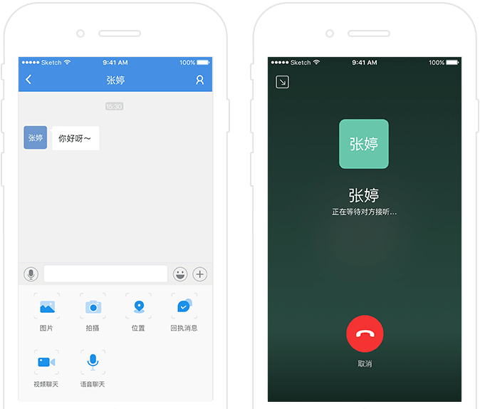
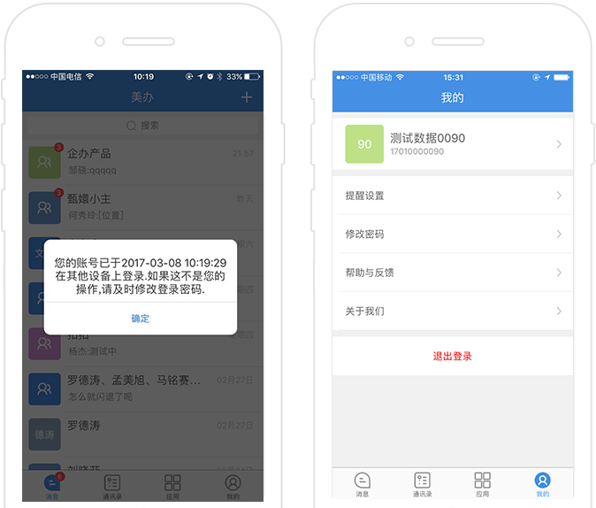

美办1.1.1版本新功能介绍
-
1、新增文件传输功能

大家期盼已久的文件传输功能终于上线！经产品汪们反复调研实践，将文件传输上限定为500M，并将文件格式扩展，现能支持更多格式的文件，以应对各种工作情况。目前支持文件传输、下载、删除、转发、查看、存储及断点续传，以后版本会进一步优化。
-
2、新增音频视频对话功能

此功能聚焦于员工之间的信息快速交流，一键双人音频聊天，解放您的拇指菇凉，懒癌患者动动嘴皮就能办公。不要吝啬您的表情和语言，说你想说，做你想做，快速沟通不是梦。
-
3、互踢通知
设备互踢功能实现。同账号重复登录则踢出先登录的账号，并进行通知。修改密码下线通知。用户修改密码则通过IM通道通知给用户。
-
4、新增3DTouch体验


IOS端新增3DTouch炫酷体验。在IOS桌面上，用户可直接重按“美办”图标进入“扫扫加群”、“发起群聊”。在会话列表中，用户不需进入会话查看聊天消息，重按会话项即可快速浏览会话。在会话页中，用户重按个人头像即可快速进入个人名片。“美办”如此炫酷，还不速来体验？
-
5、新增快速@某人

在会话中，长按个人头像即可快速@此人，不需进入选择列表中龟速查找。